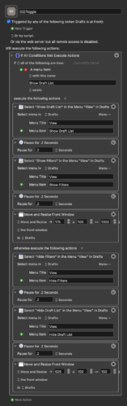

Hello! In the Mac app, when I hit Cmd + 1 to close the view of the list of drafts (to focus only on the text), is there a way to make it so that the window shrinks down to the size of the draft window?
The workflow I’m in is: I’m working in a small Drafts window (small because there’s another window behind it I’m reading in parallel), set to the minimum possible width for a Drafts window. I have to open the list of my drafts (by pressing Cmd +1) to change which draft I’m working on. This causes the Drafts app window to widen to show the list of drafts to select from. But then when I close the list of drafts again (once again hitting Cmd + 1), the window stays wider–it keeps the extra width it gained when I opened up the view of my drafts on the left. I would love it if there were a way to preserve the old, smaller width, from before I hit Cmd + 1 the first time.
A very specific use case, but wanted to ask about it! Thanks so much. I am just loving this app.

![" data-base62-sha1="iB9ZNCdWFojGJ56bRYcaYFakcBb" width="157" height="499" srcset="../../uploads/default/optimized/2X/8/825a839dbf55084edae4223718c793854e039211_2_157x499.png, ../../uploads/default/optimized/2X/8/825a839dbf55084edae4223718c793854e039211_2_235x748.png 1.5x, ../../uploads/default/optimized/2X/8/825a839dbf55084edae4223718c793854e039211_2_314x998.png 2x" data-small-upload="https://forums.getdrafts.com/uploads/default/optimized/2X/8/825a839dbf55084edae4223718c793854e039211_2_10x10.png">02)Toggle <6F3D 200512T190631>964×3070 386 KB](../../uploads/default/original/2X/8/825a839dbf55084edae4223718c793854e039211.png){kind=link}